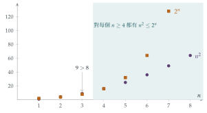

STEP III 2015，第 2 題
繼續之前，請先閱讀題目（原題為英文）。題目載於 STEP Support Programme 的題目資料庫： step.maths.org/questions/15-s3-q2
引子
大學第一門分析（analysis）課程裏，幾乎每一個命題都是同一個模樣：存在某個東西，使得對所有某些東西，某個條件都成立。「數列（sequence）趨向 \(L\)」的意思是：對每一個容許誤差 \(\varepsilon > 0\)，都存在一個位置 \(N\)，使得對所有 \(n \geq N\)，都有 \(|a_n - L| < \varepsilon\)。能夠純熟運用這種句式的學生，會覺得分析引人入勝；不熟悉的學生，則會覺得摸不着頭腦。
這道題目設計精妙，正好是這種說話方式的一個平易入門。它定義了一個新概念「最終小於」，然後就這個概念問了四條是非題。四條之中有一條是假的，而它為假的原因，正正是大多數大學一年級學生初次嘗試否定（negate）含有量詞（quantifier）的命題時會掉進的陷阱。
動筆之前
慢慢細讀定義。\((s_n) \leq (t_n)\) 並不是說對每個 \(n\) 都有 \(s_n \leq t_n\)，而是說由某一項開始，這個不等式一直成立。最初的幾項完全無關痛癢：即使你把其中一個數列開首的一百萬項改掉，\((s_n) \leq (t_n)\) 是否成立也不受影響。
定義中有「存在正整數 \(m\)」這句話。要證明 \((s_n) \leq (t_n)\)，你究竟要拿出甚麼來？要證明它是假的，你又要說明甚麼？
要證明它，你必須拿出一個合適的 \(m\)，然後說明每一個 \(n \geq m\) 都符合要求。要否證它，你必須說明沒有任何 \(m\) 行得通：無論別人提出哪一個 \(m\)，總有某個 \(n \geq m\) 使得 \(s_n > t_n\)。請把後面這個說法記在心裏，第 (ii) 部分會用到。
逐步解題
階段 1 線性函數對二次函數
第 (i) 部分問的是 \(1000n \leq n^2\) 是否最終成立。由於 \(n > 0\)，這等同於 \(1000 \leq n\)。所以取 \(m = 1000\) 便可：對每個 \(n \geq 1000\)，都有 \(n^2 = n \cdot n \geq 1000 n\)。此命題為真。■
在最初的 \(999\) 項，\(1000n\) 遠大於 \(n^2\)，但這並不要緊。「最終」二字不理會任何有限多項。
階段 2 「最終小於」跟普通的「小於」相似嗎？
對普通的數而言，如果 \(a \leq b\) 不成立，那麼 \(b < a\)，因此當然有 \(b \leq a\)。第 (ii) 部分問的是，我們這個新關係是否也有同樣的性質。
「\((s_n) \leq (t_n)\) 不成立」究竟是甚麼意思？把它完整地寫出來，而且句首不要用「不」字。
「存在 \(m\)，使得對所有 \(n \geq m\)，都有 \(s_n \leq t_n\)」這個命題為假，恰好就是
對每個 \(m\)，都有某個 \(n \geq m\) 使得 \(s_n > t_n\)。
換句話說，\(s_n > t_n\) 出現無限多次。這比「由某一項開始一直有 \(s_n > t_n\)」弱得多。兩個數列大可以不斷互換位置。
試找出兩個正數數列，它們永遠不斷互換位置，以致任何一個都不是最終小於另一個。
取 \(s_n = 2 + (-1)^n\)，即 \(s_n = 1, 3, 1, 3, \ldots\)，並對所有 \(n\) 取 \(t_n = 2\)。對每個 \(m\)，都有一個偶數 \(n \geq m\) 使得 \(s_n = 3 > 2 = t_n\)，所以 \((s_n) \leq (t_n)\) 不成立。但同樣地，對每個 \(m\)，都有一個奇數 \(n \geq m\) 使得 \(t_n = 2 > 1 = s_n\)，所以 \((t_n) \leq (s_n)\) 也不成立。此命題為假。■
階段 3 串連起來
在第 (iii) 部分，你有兩個 \(m\) 的值，每個假設各給一個，兩者可能不同。要得出結論，應該用哪一個？
假設對所有 \(n \geq m_1\) 都有 \(s_n \leq t_n\)，並且對所有 \(n \geq m_2\) 都有 \(t_n \leq u_n\)。若 \(n \geq \max(m_1, m_2)\)，兩個不等式同時成立，所以 \(s_n \leq t_n \leq u_n\)。因此取 \(m = \max(m_1, m_2)\) 便可，此命題為真。■
在兩個門檻之中取較大者，是你在分析裏會用上數百次的一着。舉例說，要證明兩個收斂（convergent）數列之和也收斂，用的就是這一着。
階段 4 二次函數對指數函數
先試幾個數值：
| \(n\) | 1 | 2 | 3 | 4 | 5 | 6 | 7 | 8 |
|---|---|---|---|---|---|---|---|---|
| \(n^2\) | 1 | 4 | 9 | 16 | 25 | 36 | 49 | 64 |
| \(2^n\) | 2 | 4 | 8 | 16 | 32 | 64 | 128 | 256 |
可見 \(n^2 \leq 2^n\) 在 \(n = 1, 2\) 時成立，在 \(n = 3\) 時不成立，然後由 \(n = 4\) 起似乎一直成立（圖 2.1.1）。很自然會猜 \(m = 4\)。
要用歸納法（induction）證明對所有 \(n \geq 4\) 都有 \(n^2 \leq 2^n\)，你需要由 \(n^2 \leq 2^n\) 推到 \((n+1)^2 \leq 2^{n+1} = 2 \cdot 2^n\)。\((n+1)^2\) 與 \(n^2\) 之間要有怎樣的不等式，這一步才行得通？
只要知道 \((n+1)^2 \leq 2n^2\) 就足夠，因為這樣便有 \((n+1)^2 \leq 2n^2 \leq 2 \cdot 2^n\)。而 \(2n^2 - (n+1)^2 = n^2 - 2n - 1 = (n-1)^2 - 2\)，當 \(n \geq 3\) 時為正數。於是：
基礎步驟：\(4^2 = 16 = 2^4\)。
歸納步驟：若 \(n \geq 4\) 且 \(n^2 \leq 2^n\)，則 \((n+1)^2 \leq 2n^2 \leq 2^{n+1}\)。
因此對所有 \(n \geq 4\) 都有 \(n^2 \leq 2^n\)，此命題為真，可取 \(m = 4\)。■

回顧
證明「存在」，就是要拿出來。在第 (i)、(iii) 和 (iv) 部分，證明的內容就是指明 \(m\) 是甚麼，然後加以驗證。
否定會把量詞對調。「並非（存在 \(m\)，對所有 \(n \geq m\)，\(P\)）」變成「對所有 \(m\)，存在 \(n \geq m\)，非 \(P\)」。第 (ii) 部分考的就是能否把這一點做對。
新的關係不一定跟舊的關係性質相同。「最終小於」跟 \(\leq\) 一樣具有傳遞性（transitive），但跟 \(\leq\) 不同的是，它並不能比較每一對數列。
背後的數學
在牛頓（Newton）和萊布尼茲（Leibniz）之後約 150 年間，數學家運用極限（limit）和無窮小（infinitesimal）出神入化，卻說不清楚它們確切是甚麼意思。貝克萊主教（Bishop Berkeley）在 1734 年嘲諷無窮小是「已逝之量的鬼魂」，他說的不無道理。補救要等到十九世紀：柯西（Augustin-Louis Cauchy）以及其後的魏爾斯特拉斯（Karl Weierstrass），以由「對每個」和「存在」構成的命題，取代了「變得無限接近」這類含糊的說法。現代的定義 \[a_n \to L \iff \text{對每個 } \varepsilon > 0 \text{，都存在 } N \text{，使得 } |a_n - L| < \varepsilon \text{ 適用於所有 } n \geq N\] 跟本題的定義模樣完全相同，只是前面多了一個量詞。這是你在大學分析課程裏最先遇到的東西。
增長的階
第 (iv) 部分是一道著名階梯（增長的階，orders of growth）的其中一小級。對任何固定的 \(k > 0\) 和 \(c > 1\)， \[(\ln n) \leq (n^k), \qquad (n^k) \leq (c^n), \qquad (c^n) \leq (n!), \qquad (n!) \leq (n^n),\] 而事實上，每個數列不單最終小於下一個，更是最終小於下一個的任何常數倍。哈代（G. H. Hardy）為這類比較寫了一整本書：Orders of Infinity（1910）。今天它已是計算機科學的日常語言，「這個算法需要 \(O(n^2)\) 步」的意思，就是步數最終不超過 \(n^2\) 的某個常數倍。\(n^2\) 與 \(2^n\) 之別，就是一個會完成的程式，與一個到太陽燃盡也完成不了的程式之別。
並非全序的序
第 (ii) 部分說明「最終小於」不是全序（total order）：有些數列對根本無法比較。這類具有傳遞性但不能比較所有東西的關係，稱為預序（preorder）或偏序（partial order），而且隨處可見：整數的整除性、集合的包含關係，以及「是……的子羣（subgroup）」都是例子。辨別一個關係具有哪些性質、不具有哪些性質，是數學家訓練的一部分。
思維技巧
要證明「存在 \(m\)，使得對所有 \(n \geq m\)…」，先指明 \(m\)，再檢查每一個 \(n\)。要否證它，則說明對每個 \(m\)，都有某個 \(n \geq m\) 不符合要求。
當一個命題含有多個量詞時，先把它完整寫出來，才嘗試證明或否證；否定時由左至右逐個處理：每個「對所有」變成「存在」，每個「存在」變成「對所有」，而末尾的條件則取其否定。
延伸練習
樣本試卷熱身題。試做 STEP III Specimen paper，第 2 題，此題出自 1987 年首屆 STEP 舉行之前發出的試卷。（最後一部分的提示：利用二項展開式（binomial expansion）的下一項。）
兩邊都成立。證明若 \((s_n) \leq (t_n)\) 且 \((t_n) \leq (s_n)\)，則對所有足夠大的 \(n\) 都有 \(s_n = t_n\)。
競逐無窮。試找出兩個遞增的正數數列，兩者皆趨向無窮大，而任何一個都不是最終小於另一個。
拾級而上。證明 \((2^n) \leq (n!)\)，並給出一個明確的 \(m\)。然後證明 \((n^{10}) \leq (2^n)\)，並求出可行的最小 \(m\)。（第二部分用試算表會有幫助；答案大得出人意表。）
延伸閱讀
Lara Alcock, How to Study for a Mathematics Degree（牛津大學出版社 Oxford University Press）。第 3 章講的正是這種邏輯語言，以及大學新生為何覺得它困難。
Lara Alcock, How to Think About Analysis（牛津大學出版社 Oxford University Press）。一本親切易讀的指南，講解大學一年級分析的各個定義。
Daniel Velleman, How to Prove It（劍橋大學出版社 Cambridge University Press）。有系統地介紹邏輯、量詞與證明。